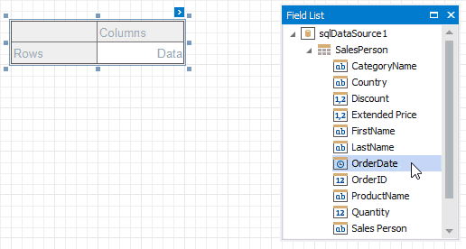
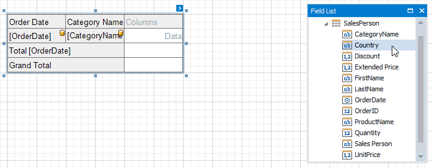
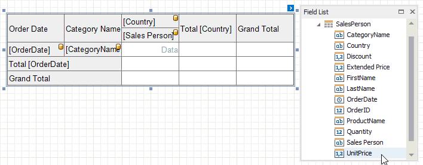
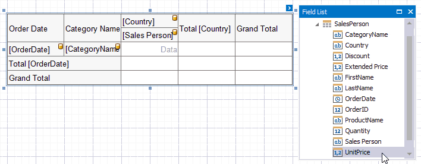
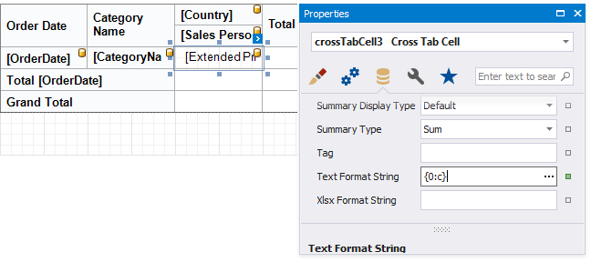

Cross Tab Fields
Drop data fields from the Field List onto cross-tab areas to define the control layout. The Cross Tab supports three field types (areas):
Rows (the Row Fields collection) - displays field values as row headers.
Columns (the Column Fields collection) - displays field values as column headers.
Data (the Data Fields collection) - uses field values to calculate summaries at row and column intersections.
Tip
You can also use calculated fields if data source fields do not suit your requirements and you need to pre-process data before it is shown in the Cross Tab.
Row and Column Fields
You can drop two or more data fields onto the same area to create a hierarchy. The first field's values are displayed at the root level (the first column/row), the second field's values are grouped by the first field's values and displayed at the second hierarchy level (the second column/row), and so on.
Specify Row Fields

Specify Column Fields

Cross Tab cells marked with a database icon become bound to the dropped fields. The corresponding rows/columns are printed in the document as many times as there are field values in the data source. The top left corner displays headers for row data fields.
Additional rows/columns are added to the Cross Tab to display total values calculated against these fields. The last row/column displays grand total values calculated against all the rows/columns.
Data Fields
You can add two or more data fields and arrange them in two ways:
in a column, one under the other (field headers are displayed as row headers);

in a row, one after the other (field headers are displayed as column headers);

When the data area contains only one field, the field header is not displayed.
Note
- You cannot bind the top left corner, row/column totals, and row/column grand totals;
- You cannot bind Cross Tab cells to report parameters;
- You can only bind Cross Tab cells to fields from a data source and data member assigned to the Data Source and Data Member properties.
Format Field Values
Use a cell's Text Format String property to format output data.

You can also use the Null Value Text property to specify the text shown when a data field's value is null or empty.